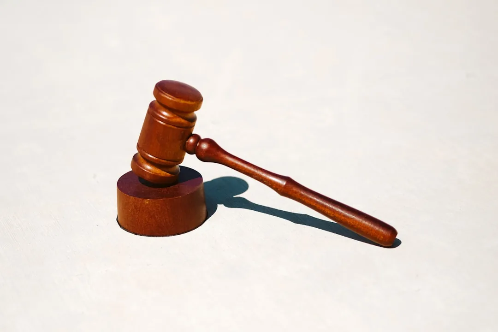
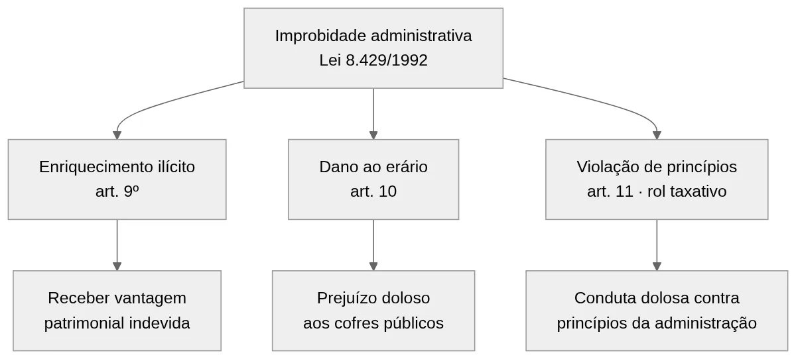
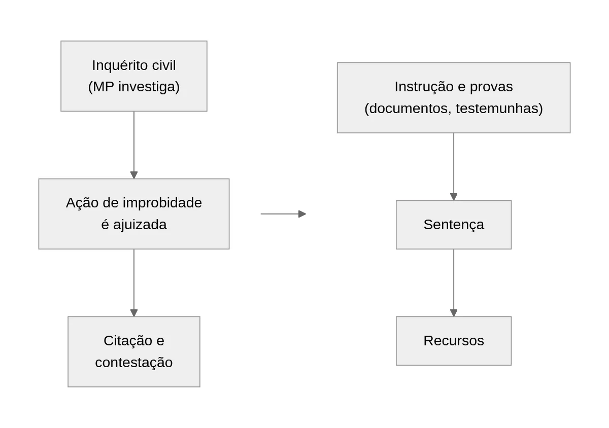

Improbidade Administrativa: Como se Defender da Ação
Receber a citação de uma ação de improbidade administrativa, ou seja, a comunicação oficial de que a pessoa virou ré no processo, é um dos momentos mais delicados na vida de qualquer agente público. De uma hora para outra, anos de carreira, o cargo e até os direitos políticos entram em risco. E o assunto raramente chega sozinho: costuma vir acompanhado de exposição pública, o que aumenta a pressão sobre o servidor e sua família.
A boa notícia é que a improbidade administrativa mudou muito nos últimos anos. A Lei 14.230/2021 reformou profundamente a Lei 8.429/92 e ampliou as possibilidades de defesa. Hoje, só responde quem agiu com dolo, ou seja, com intenção de praticar o ato ilícito. Por isso, muitas acusações que antes prosperavam agora podem ser afastadas logo no início.
As próximas seções explicam o que é improbidade administrativa, como a lei organiza as modalidades, o que mudou com a reforma de 2021 e como funciona a defesa na prática. O texto foi escrito para servidores, gestores e agentes políticos (prefeitos, vice-prefeitos, secretários e vereadores) de Florianópolis e de todo o estado de Santa Catarina que enfrentam ou temem enfrentar uma ação desse tipo.
O que é improbidade administrativa e o que ela não é
A improbidade administrativa é o ato ilegal e intencional praticado por agente público contra a administração. A matéria está disciplinada na Lei 8.429/1992, conhecida como Lei de Improbidade Administrativa ou simplesmente LIA. Em resumo, a lei pune quem usa a função pública para enriquecer ilicitamente, causar prejuízo aos cofres públicos ou violar os princípios da administração.
Contudo, existe muita confusão sobre a natureza dessa responsabilização. Esclarecer esse ponto é o primeiro passo de qualquer defesa bem orientada.
Uma ação cível, não um processo criminal
A ação de improbidade administrativa tem natureza cível, e não penal. Isso significa que ela não gera prisão, não cria antecedentes criminais e não se confunde com processo por crime contra a administração pública. A própria Lei 14.230/2021 deixou expresso que a improbidade administrativa não é ação penal e que se aplicam a ela os princípios do direito administrativo sancionador. Na prática, isso assegura ao acusado garantias parecidas com as do processo penal, como a presunção de inocência e a exigência de prova concreta da acusação.
No entanto, o mesmo fato pode gerar consequências em esferas diferentes. Um contrato irregular, por exemplo, pode motivar ação de improbidade, processo criminal e tomada de contas (a apuração de prejuízo feita pelo próprio Tribunal de Contas) ao mesmo tempo. Cada esfera tem regras, provas e prazos próprios. Portanto, a estratégia de defesa precisa enxergar o conjunto, e não cada processo isoladamente.
As sanções previstas na lei
Embora não exista risco de prisão, as sanções da improbidade administrativa são pesadas. A depender da modalidade, o condenado pode sofrer:
- perda da função pública;
- suspensão dos direitos políticos, o que impede o condenado de votar e de ser votado;
- multa civil, que pode alcançar valores expressivos;
- proibição de contratar com o poder público ou de receber benefícios fiscais e creditícios;
- obrigação de ressarcir integralmente o dano, quando houver prejuízo comprovado.

Para um servidor de carreira, a perda da função pública encerra a trajetória profissional. Para um prefeito, vereador ou secretário, a suspensão dos direitos políticos interrompe a vida pública por anos. Assim, mesmo sem caráter criminal, a ação de improbidade exige defesa técnica desde o primeiro momento.
Atenção: improbidade administrativa não é sinônimo de irregularidade. Erro, má gestão ou divergência de interpretação, sem intenção desonesta, não configuram ato ímprobo. Essa distinção, reforçada pela reforma de 2021, é a base de muitas defesas bem-sucedidas.
As três modalidades de improbidade administrativa
A Lei 8.429/92 organiza os atos de improbidade administrativa em três grupos. Conhecer cada um deles é essencial, porque a modalidade define a gravidade da acusação, as sanções possíveis e a linha de defesa mais adequada.
Enriquecimento ilícito (art. 9º)
É a modalidade mais grave. Ocorre quando o agente público obtém vantagem patrimonial indevida em razão do cargo. São exemplos clássicos receber propina, usar bens públicos em proveito próprio ou incorporar verbas ao patrimônio pessoal. Aqui, a acusação precisa provar a vantagem indevida e o dolo do agente.
Dano ao erário (art. 10)
Nessa modalidade, o ato causa prejuízo efetivo aos cofres públicos. Fraudes em licitação, pagamentos sem contraprestação e liberação irregular de verbas são exemplos comuns. Desde a reforma de 2021, é indispensável comprovar a perda patrimonial efetiva. E a modalidade culposa (sem intenção, por descuido) deixou de existir, como se verá adiante.
Violação dos princípios da administração (art. 11)
Por fim, o art. 11 trata dos atos que atentam contra princípios como honestidade e imparcialidade, mesmo sem enriquecimento ou dano. Aqui a reforma mexeu fundo. Antes, o dispositivo funcionava como uma cláusula aberta que abrigava quase qualquer conduta. Hoje, o rol é taxativo: somente as condutas expressamente listadas na lei podem ser enquadradas, como revelar segredo de que se tem ciência em razão do cargo ou frustrar concurso público.

A tabela abaixo resume as três modalidades de improbidade administrativa e as principais sanções após a Lei 14.230/2021:
| Modalidade | Conduta típica | Principais sanções |
|---|---|---|
| Enriquecimento ilícito (art. 9º) | Obter vantagem patrimonial indevida em razão do cargo | Perda dos bens acrescidos, perda da função, suspensão dos direitos políticos até 14 anos, multa e proibição de contratar com o poder público até 14 anos |
| Dano ao erário (art. 10) | Causar prejuízo efetivo aos cofres públicos, por ação dolosa | Ressarcimento integral, perda da função, suspensão dos direitos políticos até 12 anos, multa e proibição de contratar até 12 anos |
| Violação de princípios (art. 11) | Praticar uma das condutas do rol taxativo da lei | Multa civil de até 24 vezes a remuneração e proibição de contratar até 4 anos |
Como se vê, a resposta do Estado varia bastante conforme o enquadramento. Por isso, discutir a capitulação correta do ato, isto é, o enquadramento da conduta no artigo certo, é uma das primeiras tarefas do advogado para improbidade administrativa. Não raro, a acusação enquadra no art. 9º ou no art. 10 condutas que, na pior das hipóteses, caberiam no art. 11.
O que a Lei 14.230/2021 mudou na defesa
A Lei 14.230/2021 promoveu a maior reforma da história da Lei de Improbidade Administrativa. O objetivo declarado foi conter excessos e reservar a punição para quem age de forma comprovadamente desonesta. Para quem responde a uma ação de improbidade, as mudanças abriram caminhos de defesa que antes não existiam.
Dolo específico: o fim da improbidade culposa
A mudança mais importante foi a exigência de dolo específico. Agora, a acusação precisa provar que o agente público quis alcançar o resultado ilícito. Não basta a irregularidade objetiva, a inabilidade do gestor ou a divergência de interpretação da lei. Com isso, a improbidade culposa, aquela por negligência ou imperícia, deixou de existir.
Essa alteração beneficia especialmente gestores que assinaram atos com base em pareceres técnicos ou que tomaram decisões dentro de interpretação razoável da norma. Sem prova da intenção desonesta, não há ato de improbidade administrativa.
Rol taxativo, prescrição e novos marcos
O art. 11 passou a ter rol taxativo, como já explicado. A prescrição, ou seja, o prazo máximo que o Estado tem para processar o agente (vencido esse prazo, a punição fica impossível), também ganhou regras claras: o prazo geral é de 8 anos, contado a partir da ocorrência do fato ou, em caso de infração permanente, do dia em que cessou a permanência. A lei também definiu situações em que a contagem é interrompida e recomeça do zero, como o ajuizamento da ação, e criou a chamada prescrição intercorrente, que impede que o processo se arraste indefinidamente. Em muitos casos, a análise da prescrição encerra a discussão antes mesmo do mérito.
Quem pode propor a ação
Outro ponto relevante veio do Supremo Tribunal Federal. Em 2022, o STF definiu que tanto o Ministério Público quanto a pessoa jurídica lesada podem propor a ação de improbidade. Na prática, isso significa que o município, o estado ou a autarquia prejudicada (órgãos com personalidade própria, como o INSS ou uma universidade pública) também têm legitimidade para acionar o agente, ao lado do Ministério Público. Para quem responde à ação, conferir a legitimidade de quem a ajuizou também é matéria de defesa preliminar.
Acordo de não persecução civil (ANPC)
A reforma também consolidou o acordo de não persecução civil. Trata-se de uma solução negociada em que o investigado assume obrigações, como ressarcir o dano, em troca do encerramento do caso sem as sanções mais graves. O ANPC pode ser celebrado durante a investigação ou mesmo no curso do processo. Entretanto, avaliar se o acordo compensa exige análise técnica cuidadosa, porque ele envolve reconhecimento de obrigações e produz efeitos duradouros.
Veja, em resumo, o antes e o depois da reforma:
| Tema | Antes da Lei 14.230/2021 | Depois da Lei 14.230/2021 |
|---|---|---|
| Exigência de intenção (dolo) | Admitia improbidade culposa no dano ao erário | Exige dolo específico em todas as modalidades |
| Art. 11 (princípios) | Rol aberto, exemplificativo | Rol taxativo, apenas condutas listadas |
| Prescrição | 5 anos, com regras variáveis conforme o vínculo | 8 anos do fato, com marcos próprios e prescrição intercorrente |
| Solução negociada | Vedação inicial a acordos, depois flexibilizada | ANPC expressamente previsto e regulamentado |
| Sanções | Patamares menores e menos graduados | Tetos maiores para suspensão de direitos e proibição de contratar; multas reduzidas e dosimetria com proporcionalidade reforçada |
Se você responde a uma ação de improbidade ajuizada antes de 2021, a discussão sobre a aplicação da lei nova ao seu caso é técnica e ainda gera debates nos tribunais. A equipe da Mussi Advocacia & Consultoria, em Florianópolis, pode analisar seu processo e indicar quais teses da reforma se aplicam à sua situação concreta.
Como funciona o processo e as fases da defesa
A ação de improbidade segue um rito próprio, e cada fase abre oportunidades de defesa. Entender esse caminho ajuda o agente público a agir no tempo certo, sem desperdiçar chances processuais.
Inquérito civil: a defesa começa antes da ação
Na maioria dos casos, a apuração de improbidade administrativa começa com um inquérito civil instaurado pelo Ministério Público. Nessa fase, o órgão colhe documentos, ouve testemunhas e requisita informações. Muitos investigados ignoram essa etapa por acreditarem que só precisam se preocupar quando houver processo judicial. Esse é um erro grave.
É no inquérito civil que a defesa técnica pode apresentar documentos, esclarecer fatos e demonstrar a ausência de dolo antes que a acusação se consolide. Uma atuação bem construída nessa fase pode levar ao arquivamento da investigação. Para entender como o órgão acusador atua e quais são os seus limites, leia nosso artigo sobre os deveres do Ministério Público.
A produção de provas pela própria defesa também faz enorme diferença. Perícias particulares, pareceres técnicos e levantamento documental permitem contar a versão completa dos fatos. Explicamos essa estratégia em detalhes no texto sobre a importância da investigação defensiva.

Citação, contestação e instrução
Ajuizada a ação, o juiz analisa a petição inicial, o documento que formaliza a acusação, e, se aceitar a ação (o chamado recebimento), determina a citação do réu. A partir daí, abre-se o prazo de 30 dias para a contestação, peça central da defesa. Nela, o advogado enfrenta a acusação ponto a ponto: questiona a legitimidade, a prescrição, o enquadramento legal, a existência de dolo e a prova do suposto dano.
Em seguida vem a instrução, com depoimentos, perícias e juntada de documentos. Essa fase decide a maior parte dos casos, porque a condenação por improbidade administrativa exige prova concreta do dolo, e não meras presunções. Depois da sentença, ainda cabem recursos ao Tribunal de Justiça de Santa Catarina ou ao Tribunal Regional Federal, conforme o caso, e aos tribunais superiores.
Ponto-chave: em Florianópolis e nas demais comarcas catarinenses, a ação tramita na Justiça Estadual, sob o TJSC, quando envolve verbas municipais ou estaduais. Se houver recursos federais fiscalizados pela União, a competência passa para a Justiça Federal. Definir o juízo correto também é matéria de defesa.
Cada uma dessas etapas tem prazos rígidos. Perder o prazo da contestação, por exemplo, pode comprometer seriamente o resultado. Se você já foi citado em uma ação de improbidade administrativa em Santa Catarina, fale com a Mussi Advocacia & Consultoria antes de qualquer providência: quanto mais cedo a defesa entra no caso, maiores são as possibilidades de êxito.
Quem responde e quando procurar um advogado em Florianópolis
A Lei de Improbidade Administrativa alcança um universo amplo de pessoas. Saber se você está nesse universo, e em que condição, orienta os primeiros passos da defesa.
Servidores, agentes políticos e particulares
Respondem por improbidade administrativa os agentes públicos em sentido amplo: servidores efetivos e comissionados, empregados públicos, prefeitos, secretários, vereadores e dirigentes de autarquias, fundações e empresas estatais. Florianópolis, por ser a capital catarinense, concentra servidores municipais, estaduais e federais, além de órgãos de fiscalização como o Tribunal de Contas do Estado (TCE/SC) e o Ministério Público. Naturalmente, esse ambiente gera grande volume de investigações e ações.
O particular também pode responder por improbidade administrativa, desde que induza ou concorra dolosamente para a prática do ato. O mero beneficiário só responde se comprovada a sua participação dolosa. É o caso do empresário que participa de fraude em licitação, por exemplo. Contudo, a lei é clara: o particular não responde sozinho, sem a presença de um agente público no polo passivo (isto é, como réu na mesma ação).
Erros comuns de quem responde a uma ação de improbidade
Alguns erros se repetem com frequência nesses casos, e todos custam caro:
- ignorar o inquérito civil e deixar a acusação se formar sem apresentar a sua versão dos fatos (o contraditório), reagindo só quando a ação já está ajuizada;
- responder sem advogado ou prestar declarações precipitadas, já que explicações informais podem ser usadas contra o próprio declarante;
- perder prazos processuais: a contestação fora do prazo enfraquece a defesa em um processo que pode custar o cargo;
- subestimar o caso por não ser criminal, esquecendo que as sanções cíveis atingem carreira, patrimônio e direitos políticos;
- aceitar ou recusar acordo sem análise técnica, porque o ANPC pode ser ótima saída em um caso e péssima em outro.
Fique atento: quem busca advogado de improbidade administrativa em Florianópolis, ou em qualquer cidade de Santa Catarina, deve priorizar atendimento técnico e análise individualizada do caso. Cada ação tem provas, enquadramento e momento processual próprios, e não existe defesa padronizada.
O momento ideal para procurar um advogado é o primeiro sinal de investigação: uma notificação do Ministério Público, um ofício do TCE/SC ou mesmo a notícia de que um contrato sob sua responsabilidade está sendo apurado. Agir cedo permite construir a defesa com calma, reunir provas e, quando for o caso, negociar em posição mais favorável.
Perguntas frequentes sobre improbidade administrativa
Improbidade administrativa é crime? Posso ser preso?
Não. A ação de improbidade tem natureza cível, regida pela Lei 8.429/92 com as alterações da Lei 14.230/2021. Ela não gera prisão nem antecedentes criminais. Contudo, o mesmo fato pode ser apurado também na esfera penal, em processo separado e com regras próprias.
Quais são as punições possíveis na ação de improbidade?
As sanções variam conforme a modalidade do ato de improbidade administrativa. Elas incluem perda da função pública, suspensão dos direitos políticos, multa civil, proibição de contratar com o poder público e ressarcimento do dano. O juiz deve dosar as penas conforme a gravidade do caso, e nem todas se aplicam a todas as modalidades.
Qual é o prazo de prescrição da improbidade administrativa?
Com a Lei 14.230/2021, o prazo geral passou a ser de 8 anos, contado da ocorrência do fato ou do fim da permanência, nas infrações permanentes. A lei também prevê marcos de interrupção e a prescrição intercorrente durante o processo. A análise do prazo concreto depende das datas e dos atos de cada caso.
Servidor aposentado ou ex-gestor ainda pode responder?
Sim. O que importa é a data do ato, e não a situação atual do agente. Quem praticou o ato enquanto exercia função pública pode responder mesmo depois de aposentado ou de deixar o cargo, desde que não tenha ocorrido a prescrição. As sanções aplicáveis, porém, são ajustadas à situação de cada réu.
Preciso de advogado já na fase do inquérito civil?
Sim, e esse costuma ser o momento mais valioso da defesa. No inquérito civil, o advogado pode apresentar documentos, esclarecer os fatos e demonstrar a ausência de dolo antes do ajuizamento da ação. Uma atuação técnica nessa fase pode levar ao arquivamento da investigação ou a um acordo em condições melhores.
Defesa técnica desde o primeiro ato
Enfrentar uma acusação de improbidade administrativa sem orientação especializada é arriscar, em um processo longo e técnico, tudo o que se construiu na vida pública. A reforma de 2021 fortaleceu as garantias de defesa, mas quem não conhece as teses novas não consegue aproveitá-las. A Mussi Advocacia & Consultoria, em Florianópolis, defende agentes públicos em todo o estado de Santa Catarina, do inquérito civil aos tribunais superiores. Entre em contato e agende uma análise do seu caso.